df$Hipertension <- cut(df$Tension_Arterial,breaks = c(0,140,Inf),
labels = c("Sin hipetensión", "Hipertensión"))Regresión logística. Parte 1
Modelos lineales generalizados · Fundamentos matemáticos · Construccion de un modelo básico · Interpretacion
Edsaúl Emilio Pérez-Guerrero
2026-10-20
Objetivos de la sesión
- Entender las generalidades del modelo lineal generalizado y sus diferencias con la regresión lineal múltiple.
- Comprender por las variables binarias requieren un modelo diferente al de las variables continuas cuando se usas como variable de desenlace.
- Comprender los fundamentos matemáticos detrás del OR que se obtiene en la regresión logística
- Construir un modelo de regresión logística e interpretarlo.
- Paquetes:
ggplot2,broom,performance. - Base de datos:
estudio_AR_STAT4.csv(carpetaBases/del tema).sal_tension_arterial.csv(carpetaBases/del tema).
¿Cómo construir una regresión para identificar la asociación del gen STAT4 rs7574865 (alelo de riesgo T) con la Artritis Reumatoíde?
¿Cómo podemos indentificar factores asociados la hipertensión en un grupo de pacientes?
Nuestros datos. Variantes en STAT4
¿Cómo podemos determinar si una variante genética está asociada con una enfermedad, cuantificar esa asociación y evaluar si nuestras conclusiones son estadísticamente válidas?
- Estudio de casos y controles: 400 pacientes con artritis reumatoide (AR) y 400 controles sin AR.
- Variante de interés: STAT4 rs7574865 (alelo de riesgo T). En el estudio original el alelo T se encontró en 27 % de los cromosomas de casos y 22 % de controles; OR ≈ 1.32 (Remmers et al. 2007).
- Covariables: sexo, edad, tabaquismo, ancestría amerindia y el primer componente principal genético (PC1).
Los datos que utilizaremos fueron simulados con base al estudio de Remmers et al. (2007), la idea fue preservar datos lo más parecidos a la realidad.
La base de datos sal
¿Cómo podemos indentificar factores asociados a la hipertensión?
- También utilizaremos la base de datos “sal_tension_arterial.csv” con algunas modificaciones.
- Estudio transversal: con 80 pacientes y 6 variables.
- Se sabe por antecedentes previos del grupo de investigación que se puede establecer un punto de corte para las cifras de tensión arterial sistólica para diagnosticar a un paciente con hipertensión o sin hipertensión. Este punto de corte es 140 mmHg.
- Esta base tiene datos sobre el promedio del consumo de sal y su relación con la tensión arterial (ya la hemos utilizado). Contiene datos sobre comorbilidades, sexo, edad y sobre tabaquismo. En esta ocasión nos enfocaremos en la hipertensión.
0. El modelo lineal generalizado (GLM)
Un mismo paciente, tres preguntas distintas

- La variable dependiente cambia de naturaleza: continua, binaria, conteo.
- El predictor (edad) es el mismo. ¿Podemos usar
lm()para las tres?
¿Qué pasa si usamos regresión lineal para todo?
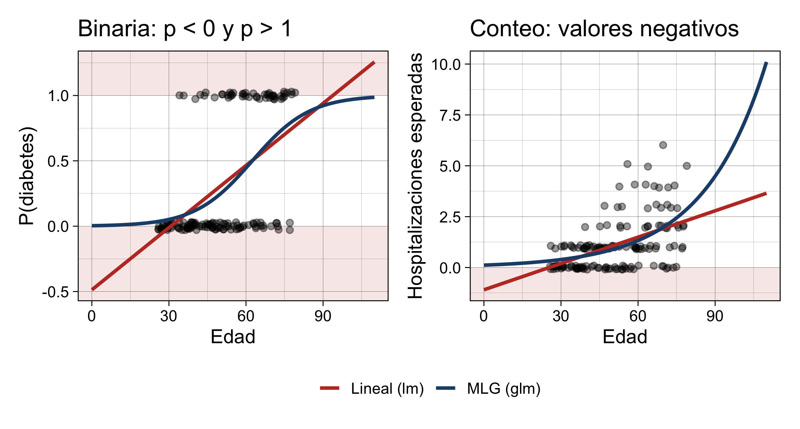
La recta predice valores imposibles (zonas rojas). Además, en datos binarios y de conteo la varianza depende de la media, así que el supuesto de varianza constante no se cumple (Radečić 2026).
¿Qué es un modelo lineal generalizado?
Un marco que extiende la regresión lineal a variables dependientes no normales (Nelder y Wedderburn 1972; Radečić 2026).
| Componente | ¿Qué define? | Ejemplo (diabetes sí/no) |
|---|---|---|
| Aleatorio (distribución) | Tipo de dato que genera \(Y\) | Binomial |
| Sistemático (predictor lineal) | \(\eta = \beta_0 + \beta_1X_1 + \dots + \beta_kX_k\) | \(\beta_0 + \beta_1 \cdot \text{edad}\) |
| Función de enlace \(g(\cdot)\) | Conecta la media de \(Y\) con el predictor lineal | logit: \(\ln\frac{p}{1-p} = \eta\) |
El predictor lineal es el mismo que ya conoce. Lo nuevo es que el modelo es lineal en la escala del enlace (log-odds, log-conteo), no en la escala original de \(Y\).
¿Qué es un modelo lineal generalizado?
Un GLM es una extensión de la regresión lineal que permite modelar variables dependientes con diferentes distribuciones de probabilidad.
Su formulación general es:
\[\boxed{g(\mu_i)=\beta_0+\beta_1X_{1i}+\cdots+\beta_pX_{pi}}\]
Donde:
- \(\mu_i=E(Y_i\mid X_i)\): valor esperado de la variable dependiente.
- \(g(\cdot)\): función de enlace (link function).
- \(\beta\): coeficientes del modelo.
- \(X\): variables independientes.
La principal diferencia respecto a la regresión lineal es que el GLM no necesita modelar directamente la media de Y como una función lineal de X
En su lugar, modela una transformación de esa media mediante la función de enlace.
Diferentes tipos de desenlace para el GLM
| Tipo de variable dependiente | Distribución | Ejemplo biomédico |
|---|---|---|
| Continua | Normal (gaussiana) | Presión arterial |
| Binaria (0/1) | Bernoulli/binomial | Presencia de artritis reumatoide |
| Conteos | Poisson | Número de hospitalizaciones |
| Proporción de éxitos | Binomial | Número de respondedores entre pacientes evaluados |
| Continua positiva y asimétrica | Gamma | Concentración de biomarcadores positivos |
Modelo lineal vs GLM
| Aspecto | Modelo lineal (lm) |
MLG (glm) |
|---|---|---|
| Distribución de \(Y\) | Normal | Familia exponencial (binomial, Poisson, Gamma…) |
| Enlace | Identidad | Logit, log, probit, identidad… |
| Rango de predicciones | \(-\infty\) a \(+\infty\) | Restringido (0–1 para probabilidades; ≥ 0 para conteos) |
| Varianza | Constante | Depende de la media |
| Estimación | Mínimos cuadrados | Máxima verosimilitud |
| Coeficientes | Cambio en \(Y\) | Cambio en la escala del enlace → se transforman (OR, RR) |
| Bondad de ajuste | \(R^2\), prueba F | Devianza, AIC/BIC, razón de verosimilitudes |
Ejemplos de GLM
| Tipo de \(Y\) | Distribución | Enlace | Ejemplo | En R |
|---|---|---|---|---|
| Continua | Normal | Identidad | Presión arterial | glm(y ~ x, family = gaussian) |
| Binaria | Binomial | Logit | AR sí/no | glm(y ~ x, family = binomial) |
| Binaria | Binomial | Probit | Respuesta a fármaco | binomial(link = "probit") |
| Conteo | Poisson | Log | N.º de brotes de lupus | glm(y ~ x, family = poisson) |
| Conteo sobredisperso | Binomial negativa | Log | N.º de lesiones | MASS::glm.nb() |
| Continua positiva y sesgada | Gamma | Log | Costos hospitalarios | Gamma(link = "log") |
Misma sintaxis, mismo predictor lineal; solo cambia family. A partir de aquí nos concentramos en la fila resaltada: regresión logística.
1. Introducción a la regresión logística
1.1 Tipos de variables dependientes
| Tipo | Subtipo | Ejemplo | Modelo |
|---|---|---|---|
| Continua | — | Nivel de anti-CCP, PCR, expresión génica | Regresión lineal |
| Categórica | Binaria (dicotómica) | AR sí/no, respuesta a metotrexato sí/no | Regresión logística |
| Nominal (> 2 categorías) | Subtipo de leucemia | Logística multinomial | |
| Ordinal | Actividad DAS28: baja/moderada/alta | Logística ordinal | |
| Conteo | — | Número de articulaciones inflamadas | Poisson / binomial negativa |
La regresión logística modela una variable dicotómica codificada como 1 = presenta el evento y 0 = no lo presenta (Celis de la Rosa y Labrada Martagón 2014).
1.2 Regresión lineal vs. regresión logística
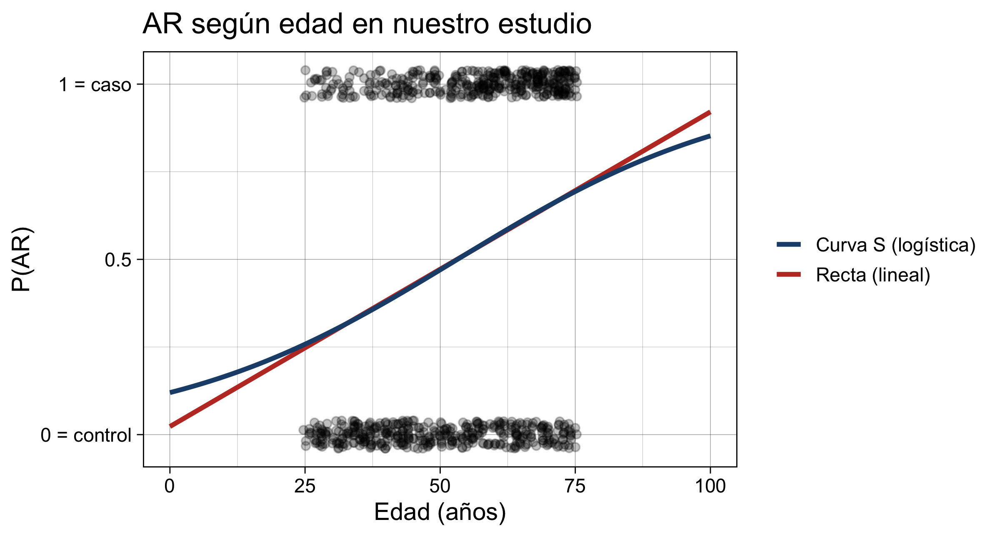
| Lineal | Logística | |
|---|---|---|
| Predice | El valor de \(Y\) | La probabilidad de que \(Y = 1\) |
| Forma | Recta | Curva en S (sigmoide) |
| Coeficiente | Cambio en unidades de \(Y\) | Cambio en log-odds → OR |
1.3 Limitaciones de la regresión lineal con respuestas binarias
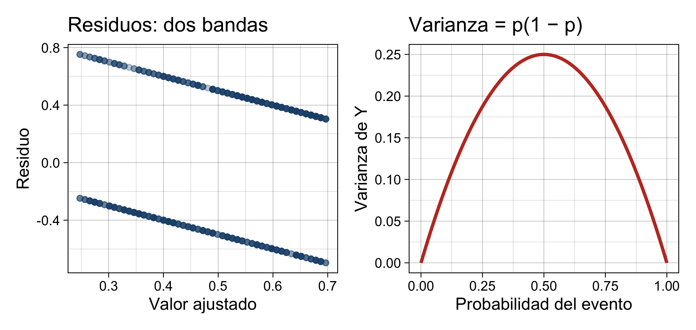
- Predicciones imposibles: probabilidades < 0 o > 1.
- Residuos no normales: para cada valor ajustado solo hay dos residuos posibles.
- Heterocedasticidad: la varianza es \(p(1-p)\), máxima en \(p = 0.5\).
- Relación no lineal: la probabilidad cambia poco en los extremos y mucho en el centro (Hosmer, Lemeshow, y Sturdivant 2013; Sperandei 2014).
¿Qué pasa si quiero asociar el consumo de sal con hipertensión?
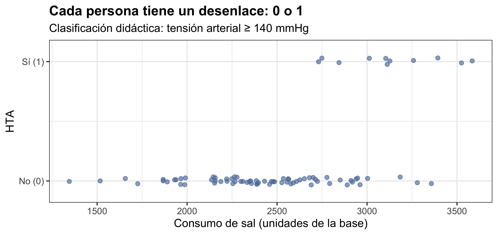
¿Qué pasa si usamos regresión lineal para asociar el consumo de sal con la hipertensión (variable dependiente)?
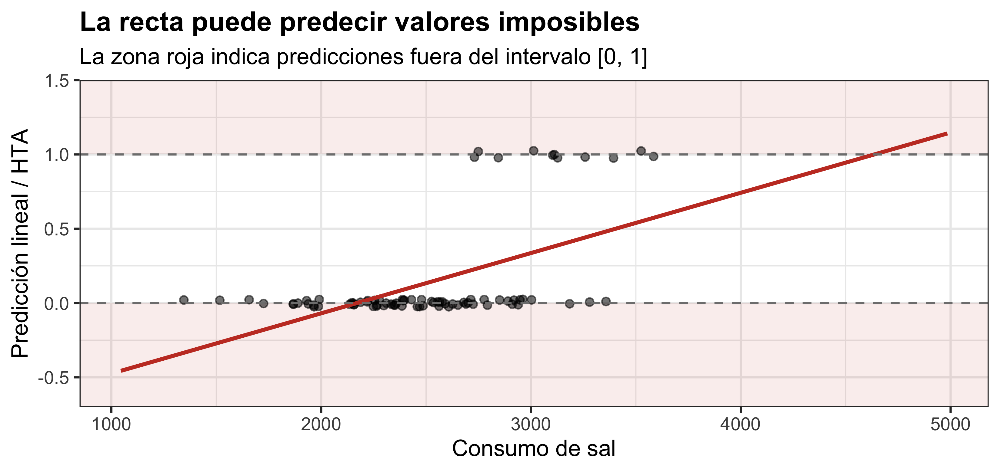
Regresión lineal frente a logística para el consumo de sal con factor asociado a la hipertensión.
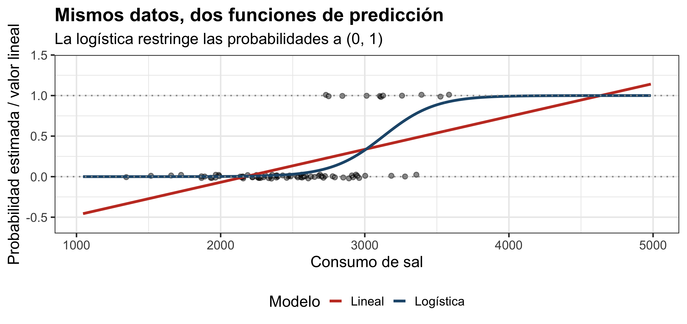
Tercera escala: logit
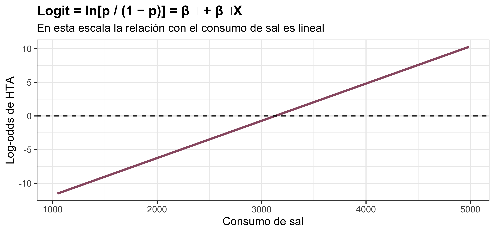
Regreso a probabilidades: función logística inversa
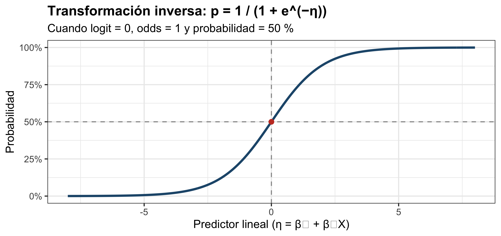
1.5 Aplicaciones de la regresión logística (algunas)
- Variables binarias: Asociaciones con variables binarias: Diagnóstico, asociación, desempeño
- Estudios de asociación genética (candidato o GWAS): ¿el genotipo se asocia con la enfermedad? (Clarke et al. 2011).
- Alelos HLA y autoinmunidad: OR de portar un alelo (p. ej., epítope compartido en AR).
- Interacciones gen–ambiente: alelo de riesgo × tabaquismo (Cordell 2009).
- Farmacogenómica: respuesta (sí/no) a un tratamiento según genotipo.
- Modelos de predicción clínica: puntajes de riesgo poligénico + factores clínicos (Steyerberg 2019).
- Epidemiología: ajuste por confusores en estudios de casos y controles, cohortes y transversales (Celis de la Rosa y Labrada Martagón 2014).
Ventaja frente al análisis estratificado (Mantel–Haenszel): admite predictores continuos y muchas covariables simultáneamente (Sperandei 2014; Celis de la Rosa y Labrada Martagón 2014).
1.5 Aplicaciones de la regresión logisitica
- Identificación de factores de riesgo: evaluar la asociación entre exposiciones y la presencia de enfermedades.
- Identificación de factores protectores: determinar si determinadas características o intervenciones se asocian con menores odds de presentar un evento.
- Predicción de enfermedades: estimar la probabilidad de que un individuo presente una enfermedad a partir de sus características clínicas, demográficas o biológicas.
- Evaluación de biomarcadores: estudiar la asociación entre biomarcadores y desenlaces clínicos, como diagnóstico, progresión o respuesta al tratamiento.
- Evaluación de tratamientos: analizar la asociación entre intervenciones terapéuticas y desenlaces binarios, como respuesta/no respuesta o remisión/no remisión.
1.5 Aplicaciones de la regresión logisitica
- Análisis de eventos adversos: identificar factores asociados con la aparición de complicaciones o efectos secundarios.
- Desarrollo de modelos de pronóstico: estimar la probabilidad de eventos clínicos, como mortalidad, hospitalización, recaída o complicaciones.
- Control de variables de confusión: estimar asociaciones ajustadas por otras variables que podrían influir en la relación estudiada.
- Evaluación de interacciones: determinar si la asociación entre una exposición y un desenlace cambia según características como edad, sexo o presencia de comorbilidades.
- Investigación epidemiológica: analizar asociaciones entre factores ambientales, ocupacionales, conductuales o sociodemográficos y desenlaces de salud.
- Investigación en salud pública: identificar factores asociados con vacunación, adherencia terapéutica, utilización de servicios de salud o participación en programas preventivos.
- Desarrollo de herramientas de apoyo a decisiones clínicas: combinar múltiples predictores para estimar probabilidades individuales y apoyar la estratificación del riesgo
Manos a la obra: cargar y preparar los datos
datos <- read.csv("../Bases/estudio_AR_STAT4.csv") # Cambie la ruta, en mi caso necesito moverme una carpeta arriba
# Desenlace: 1 = caso (AR), 0 = control. La categoría "evento" debe ser 1.
datos$caso_f <- factor(datos$caso, levels = c(0, 1), labels = c("Control", "Caso"))
# Los factores deben de estar correctamente etiquetados y en el orden correcto
# Para algunas situaciones se prefiere mantenet 0 y 1
# Factores con su categoría de referencia en primer lugar
datos$sexo <- factor(datos$sexo, levels = c("Hombre", "Mujer"))
datos$tabaquismo <- factor(datos$tabaquismo, levels = c("Nunca", "Exfumador", "Actual"))
datos$rs7574865 <- factor(datos$rs7574865, levels = c("GG", "GT", "TT"))
# Dosis alélica: número de copias del alelo de riesgo T (0, 1, 2)
datos$dosis_T <- as.numeric(datos$rs7574865) - 1
# as.numeric() sobre un factor no devuelve las etiquetas. Devuelve el código interno, es decir, la posición de cada nivel: GG = 1, GT = 2, TT = 3.
# Al restar 1 se obtiene exactamente el número de alelos T:
str(datos[, c("caso", "sexo", "edad", "tabaquismo", "PC1", "rs7574865", "dosis_T")])'data.frame': 800 obs. of 7 variables:
$ caso : int 1 0 0 0 1 1 1 0 0 1 ...
$ sexo : Factor w/ 2 levels "Hombre","Mujer": 2 2 1 1 2 1 2 2 2 2 ...
$ edad : int 49 37 34 54 66 34 59 28 55 69 ...
$ tabaquismo: Factor w/ 3 levels "Nunca","Exfumador",..: 3 2 1 1 2 2 3 3 1 3 ...
$ PC1 : num 1.951 0.189 0.237 -0.754 0.956 ...
$ rs7574865 : Factor w/ 3 levels "GG","GT","TT": 3 1 2 1 2 1 1 1 1 3 ...
$ dosis_T : num 2 0 1 0 1 0 0 0 0 2 ...¿El polimorfismo se asocia con la rs7574865 AR?
Primera mirada: genotipo por grupo
Grupo
Genotipo Control Caso
GG 187 116
GT 175 188
TT 38 96 Grupo
Genotipo Control Caso
GG 46.8 29.0
GT 43.8 47.0
TT 9.5 24.0¿Qué genotipo es más frecuente en los casos? ¿Qué esperaría si el alelo T no tuviera relación con la AR?
Primera mirada: genotipo por grupo
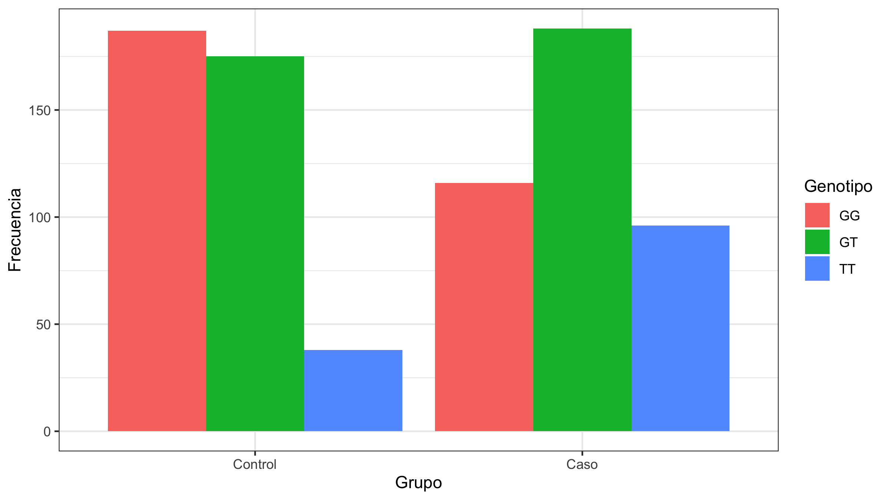
Primera mirada: genotipo por grupo
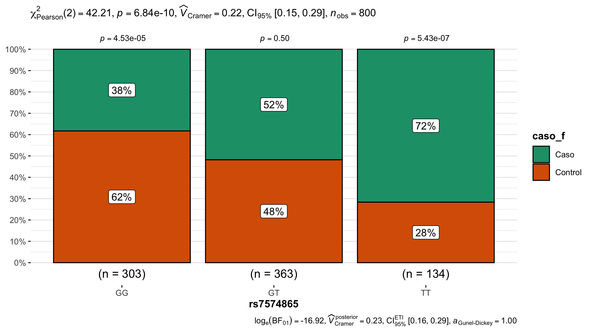
2. Fundamentos matemáticos de la regresión logística
2.1 Probabilidad
Probabilidad = eventos favorables / total de eventos. Va de 0 a 1 (Sperandei 2014).
Grupo
Genotipo Control Caso
GG 0.617 0.383
GT 0.482 0.518
TT 0.284 0.716En un estudio de casos y controles el investigador fija cuántos casos y controles incluye (400 y 400). Estas “probabilidades” reflejan el muestreo, no el riesgo de AR en la población. Lo que sí es válido comparar son los odds ratio (Celis de la Rosa y Labrada Martagón 2014).
2.2 Odds: definición e interpretación
\[\text{Odds} = \frac{p}{1-p} = \frac{\text{probabilidad de que ocurra}}{\text{probabilidad de que no ocurra}}\]
p odds
GG 0.383 0.620
GT 0.518 1.074
TT 0.716 2.526- Odds = 1 → tantos casos como controles. Odds = 2 → 2 casos por cada control.
- El odds va de 0 a \(+\infty\); la probabilidad de 0 a 1. No son sinónimos (Sperandei 2014).
Probabilidad y odds no son lo mismo
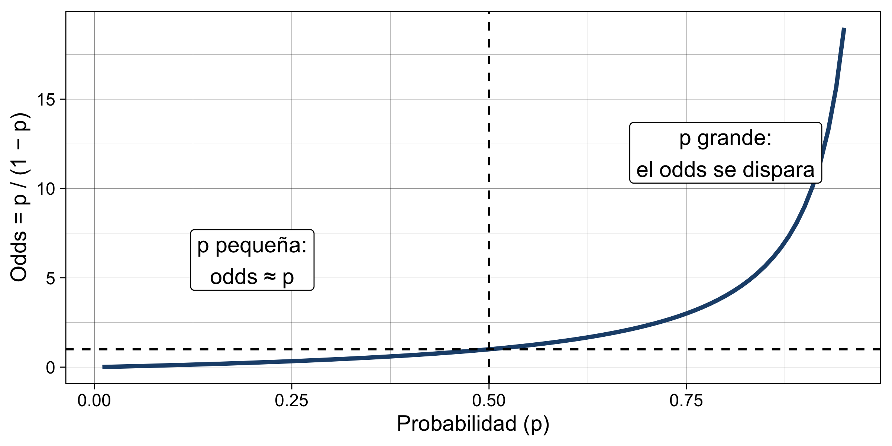
| p | 0.01 | 0.10 | 0.25 | 0.50 | 0.75 | 0.90 |
|---|---|---|---|---|---|---|
| Odds | 0.01 | 0.11 | 0.33 | 1 | 3 | 9 |
2.3 Transformación logit (log-odds)
\[\text{logit}(p) = \ln\left(\frac{p}{1-p}\right)\]

| Escala | Rango | Valor “neutro” |
|---|---|---|
| Probabilidad | 0 a 1 | 0.5 |
| Odds | 0 a \(+\infty\) | 1 |
| Log-odds (logit) | \(-\infty\) a \(+\infty\) | 0 |
En la escala logit sí podemos usar un predictor lineal \(\beta_0 + \beta_1X\) sin predecir valores imposibles.
2.4 Función logística (sigmoide)
\[f(z) = \frac{1}{1 + e^{-z}}\]

Cualquier valor de \(z\) se transforma en un número entre 0 y 1: ideal para probabilidades. Es la inversa del logit (Celis de la Rosa y Labrada Martagón 2014). En R: plogis(z).
2.5 Ecuación del modelo
Sustituyendo \(z\) por el predictor lineal (Celis de la Rosa y Labrada Martagón 2014):
\[P(Y = 1 \mid X_1, \dots, X_k) = \frac{1}{1 + e^{-(\beta_0 + \beta_1X_1 + \dots + \beta_kX_k)}}\]
Forma equivalente (la que estima R):
\[\ln\left(\frac{p}{1-p}\right) = \beta_0 + \beta_1X_1 + \beta_2X_2 + \dots + \beta_kX_k\]
- \(\beta_0\): log-odds del evento cuando todas las \(X = 0\) (grupo de referencia).
- \(\beta_j\): cambio en el log-odds por cada unidad de \(X_j\).
Nuestro primer modelo: AR según número de alelos T
Call:
glm(formula = caso ~ dosis_T, family = binomial, data = datos)
Coefficients:
Estimate Std. Error z value Pr(>|z|)
(Intercept) -0.523 0.110 -4.78 0.00000177158 ***
dosis_T 0.667 0.105 6.32 0.00000000026 ***
---
Signif. codes: 0 '***' 0.001 '**' 0.01 '*' 0.05 '.' 0.1 ' ' 1
(Dispersion parameter for binomial family taken to be 1)
Null deviance: 1109.0 on 799 degrees of freedom
Residual deviance: 1066.8 on 798 degrees of freedom
AIC: 1071
Number of Fisher Scoring iterations: 4También podemos obtener los OR
La interpretación de los OR la veremos unas diapositivas adelante.
Nuestro primer modelo: AR según número de alelos T
Una forma más fácil:
Con los log Odds:
| Characteristic | log(OR) | 95% CI | p-value |
|---|---|---|---|
| dosis_T | 0.67 | 0.46, 0.88 | <0.001 |
| Abbreviations: CI = Confidence Interval, OR = Odds Ratio | |||
Con los OR:
| Characteristic | OR | 95% CI | p-value |
|---|---|---|---|
| dosis_T | 1.95 | 1.59, 2.40 | <0.001 |
| Abbreviations: CI = Confidence Interval, OR = Odds Ratio | |||
La interpretación de los OR la veremos unas diapositivas adelante.
Otra forma de realizar la regresión con la dosis como factor
En lugar de utilizar la dosis como una variable numérica también podemos utilizarla como factor
2.6 ¿Cómo se estiman los coeficientes? Máxima verosimilitud
No hay mínimos cuadrados, sino que los coeficientes se estima mediante máxima verosimilitud (Maximum Likelihood Estimation, MLE) (Pérez Guerrero 2024; Celis de la Rosa y Labrada Martagón 2014):
La máxima verosimilitud busca los valores de los coeficientes β que hacen que los resultados que observamos sean lo más probables posible según nuestro modelo.
La idea es calcular qué tan probable sería observar nuestros resultados si las probabilidades estimadas por cada modelo fueran correctas.
Más o menos así:
- Proponer una curva (valores de \(\beta_0, \beta_1\)).
- Calcular, para cada persona, la probabilidad de lo que realmente le pasó: \(\hat p_i\) si es caso, \(1 - \hat p_i\) si es control.
- Multiplicar todas esas probabilidades → verosimilitud (en la práctica se suman sus logaritmos: log-likelihood).
- Cambiar la curva y repetir hasta encontrar la que hace más probables los datos observados.
R lo hace por un algoritmo iterativo (IRLS); summary() reporta “Number of Fisher Scoring iterations”. El Fisher Scoring es un algoritmo numérico utilizado para encontrar los parámetros que maximizan una función de verosimilitud.
Los valores de p y la devianza
- Los valores de \(p\) para los \(\beta\) en la regresión logística se obtienen mediante la prueba de Wald:
\[ z = \frac{\hat{\beta}-0}{SE(\hat{\beta})}\]
La devianza es una medida de qué tan bien se ajusta un modelo de regresión logística a los datos observados.
La devianza mide cuánto pierde nuestro modelo, en términos de log-verosimilitud, respecto a un modelo ideal que reproduce perfectamente los datos observados.
Una devianza residual (devianza del intercepto - devianza del coeficiente) mejor puede indicar que el modelo bueno
3. Interpretación de los coeficientes
3.1 Interpretación de los coeficientes β
- \(\hat\beta_1 =\) 0.667: cada alelo T aumenta el log-odds de AR en 0.667.
- Signo: positivo → factor de riesgo; negativo → factor protector; 0 → sin asociación.
- El log-odds es difícil de comunicar. Por eso se transforma: \(e^{\beta}\).
\(\beta > 0 \Leftrightarrow OR > 1\) · \(\beta = 0 \Leftrightarrow OR = 1\) · \(\beta < 0 \Leftrightarrow OR < 1\)
3.2 Odds Ratio: cálculo e interpretación
El OR compara los odds de dos grupos. Con una tabla 2 × 2: \(OR = \dfrac{a \cdot d}{b \cdot c}\) (Celis de la Rosa y Labrada Martagón 2014).
Caso
Portador 1 0
1 284 213
0 116 187[1] 2.149(Intercept) portador_T
0.6203 2.1494 Con un predictor dicotómico, \(e^{\beta_1}\) es exactamente el OR de la tabla 2 × 2 (Celis de la Rosa y Labrada Martagón 2014).
OR por alelo (modelo aditivo)
Interpretación: por cada copia adicional del alelo T, los odds de tener AR se multiplican por 1.95 (aumentan 95 %).
- Dos alelos (TT vs. GG): \(OR = e^{2\beta_1}\) = 3.79.
- El intercepto \(e^{\beta_0}\) = odds de ser caso en GG. En casos y controles no se interpreta como riesgo poblacional (Sperandei 2014; Celis de la Rosa y Labrada Martagón 2014).
3.3 Predictores continuos
(Intercept) edad
0.1362 1.0382 edad
1.455 - OR por 1 año: 1.038 → los odds aumentan 3.8 % por año.
- OR por 10 años: \(e^{10\beta}\) = 1.45. Elija una unidad con sentido clínico.
- El intercepto corresponde a edad = 0: no tiene interpretación práctica (Sperandei 2014).
3.3 Predictores categóricos
(Intercept) rs7574865GT rs7574865TT
0.620 1.732 4.073 - R crea variables dummy (\(k - 1\)) automáticamente (Sperandei 2014).
rs7574865GT: odds de AR en GT vs. GG (referencia).rs7574865TT: odds de AR en TT vs. GG.- Cada OR se interpreta respecto a la categoría de referencia.
3.4 Probabilidad, Odds Ratio y Riesgo Relativo
| Medida | Fórmula | Pregunta | ¿En casos y controles? |
|---|---|---|---|
| Probabilidad (riesgo) | \(a/(a+b)\) | ¿Qué tan probable es el evento? | No (muestreo fijado) |
| Riesgo relativo (RR) | \(\dfrac{a/(a+b)}{c/(c+d)}\) | ¿Cuántas veces más riesgo? | No se puede estimar |
| Odds ratio (OR) | \(\dfrac{ad}{bc}\) | ¿Cuántas veces más odds? | Sí |
- Si el evento es raro (< 10 %), OR ≈ RR. Si es frecuente, el OR se aleja de 1 más que el RR (Celis de la Rosa y Labrada Martagón 2014; Zhang y Yu 1998).
- Un OR grande puede corresponder a una probabilidad pequeña si el riesgo basal es bajo (Sperandei 2014).
OR vs. RR según la frecuencia del evento

La AR es poco frecuente (prevalencia < 1–2 %), por lo que el OR de nuestro estudio aproxima razonablemente al RR (Celis de la Rosa y Labrada Martagón 2014).
3.5 Intervalos de confianza del 95 %
2.5 % 97.5 %
(Intercept) 0.4772 0.7334
dosis_T 1.5874 2.4009 2.5 % 97.5 %
(Intercept) 0.4782 0.7345
dosis_T 1.5841 2.3950- Si el IC no incluye 1 → asociación estadísticamente significativa (α = 0.05).
- El ancho indica precisión: estrecho = estimación precisa.
- Wald y perfil coinciden con muestras grandes; con muestras pequeñas o OR extremos prefiera el de perfil (Hosmer, Lemeshow, y Sturdivant 2013).
La forma más fácil de obtener los IC es tbl_regression de gtsummary
3.6 Significancia estadística vs. relevancia biológica

- El valor p depende del tamaño de muestra; el OR no. En un GWAS con 100 000 personas, un OR de 1.05 es “muy significativo” (Wasserstein y Lazar 2016).
- Relevancia biológica: ¿el efecto es grande? ¿es plausible (función de STAT4 en la vía de IL-12/IL-23)? ¿se replica en otras poblaciones? ¿cambia decisiones clínicas?
- Un OR de 50 puede llegar a no ser importante, por ejemplo para un estudio de un tamaño de muestra pequeño.
- A veces los OR con IC gigantes pueden reflejar la realidad.
Cierre
Mensajes clave
- Un MLG = distribución + predictor lineal + función de enlace. La regresión logística es el MLG con distribución binomial y enlace logit.
- La regresión lineal falla con respuestas binarias: predicciones imposibles, residuos no normales, heterocedasticidad.
- Probabilidad ≠ odds ≠ log-odds. El modelo es lineal en el log-odds.
- Los coeficientes se estiman por máxima verosimilitud.
- \(e^{\beta}\) = OR. Por alelo, por año o respecto a una categoría de referencia.
- En casos y controles se estima el OR, no el RR ni el riesgo absoluto.
- Reporte siempre OR + IC 95 % y discuta la relevancia, no solo el valor p.
Practica
Práctica en clase
Con estudio_AR_STAT4.csv:
- Calcule a mano (tabla 2 × 2) el OR de ser mujer para AR y compruébelo con
glm(). - Ajuste
glm(caso ~ tabaquismo, family = binomial). Interprete cada OR respecto a “Nunca”. - Calcule la probabilidad predicha de ser caso para una persona de 30, 50 y 70 años con
predict(..., type = "response"). ¿Por qué esa probabilidad no es el riesgo poblacional? - Para el modelo de edad, obtenga el OR por cada 5 años con su IC 95 %.
- Utilice los algoritmos
steppara encontrar un modelo en el que identifique factores asociados a la AR. Ajuste por todas las variables de la base.
Práctica en clase 2
Con sal_tension_arterial.csv:
- Identifique de forma individual y mediante regresión logística los factores asociados a la hipertensión (más de 140 mm/Hg)
- Construya un modelo ajustado de forma manual, incluya interacciones y confusores el caso de ser necesario.
- Ajute el modelo con los algoritmos
step
Interpretación de OR.
Interpretación de Odds Ratios (OR)
El Odds Ratio (OR) expresa cuántas veces son las odds de un evento en un grupo respecto a otro.
- OR = 1: ausencia de asociación en la escala de odds.
- OR > 1: mayores odds del evento.
- OR < 1: menores odds del evento.
Importante
Un OR no representa directamente un cambio en la probabilidad ni en el riesgo.
Importante
La forma más fácil de interpretar un OR siempre es utilizando los odds. Así evita hablar de riesgos, probabilidades etc. Hablar de riesgos no es incorrecto, pero depende mucho del contexto del estudio.
Importante
Cuando un OR es menor a 1 puede utilizar el reciproco para facilitar su interpretación.
Los ejemplos que se muestran a continuación son genéricos. Úselos con precaución.
Ejemplo 1. Tabaquismo y cáncer pulmonar
\[ OR = 3.50 \qquad IC_{95\%}: 2.80-4.40 \]
Interpretación:
Las personas fumadoras presentan odds de cáncer pulmonar 3.5 veces las de las personas no fumadoras.
El intervalo de confianza indica que los datos son compatibles con OR entre 2.80 y 4.40.
Preguntas:
- ¿La asociación es estadísticamente significativa?
- ¿La magnitud de la asociación es importante?
- ¿El intervalo de confianza es preciso?
Ejemplo 2. Obesidad e hipertensión
\[ OR = 1.80 \qquad IC_{95\%}: 1.40-2.30 \]
Interpretación:
Las personas con obesidad presentan odds de hipertensión 80% mayores que las personas sin obesidad.
El intervalo de confianza es compatible con incrementos en las odds de entre 40% y 130%.
Preguntas:
- ¿Existe evidencia estadística de asociación?
- ¿Qué nos dice el intervalo sobre la magnitud del efecto?
Ejemplo 3. Tratamiento y mortalidad
\[ OR = 0.40 \qquad IC_{95\%}: 0.25-0.64 \]
Interpretación:
Los pacientes tratados presentan odds de mortalidad 60% menores que los pacientes no tratados.
El intervalo de confianza es compatible con reducciones en las odds de entre 36% y 75%.
Preguntas:
- ¿El tratamiento presenta una asociación protectora?
- ¿La asociación es estadísticamente significativa?
- ¿Podemos afirmar que el riesgo de morir disminuye 60%?
Ejemplo 4. Actividad física y diabetes
\[ OR = 0.75 \qquad IC_{95\%}: 0.60-0.93 \]
Interpretación:
Las personas físicamente activas presentan odds de diabetes 25% menores que las personas sedentarias.
El intervalo de confianza es compatible con reducciones en las odds de entre 7% y 40%.
Preguntas:
- ¿La asociación es estadísticamente significativa?
- ¿Qué tan precisa es la estimación?
- ¿Podemos interpretar esta asociación como causal?
Ejemplo 5. Significativo, pero con efecto pequeño
Exposición ambiental y enfermedad respiratoria
\[ OR = 1.08 \qquad IC_{95\%}: 1.03-1.13 \]
Interpretación:
Las personas expuestas presentan odds de enfermedad respiratoria 8% mayores que las no expuestas.
El resultado es estadísticamente significativo.
Preguntas:
- ¿Un efecto estadísticamente significativo es necesariamente importante?
- ¿Una asociación pequeña puede tener relevancia poblacional?
- ¿Qué información adicional necesitaríamos?
Ejemplo 6. Asociación grande, pero imprecisa
Biomarcador y respuesta al tratamiento
\[ OR = 2.50 \qquad IC_{95\%}: 0.80-7.80 \]
Interpretación:
Los pacientes positivos al biomarcador presentan odds estimadas de respuesta 2.5 veces las de los pacientes negativos.
Sin embargo, el intervalo es compatible tanto con una reducción del 20% como con un aumento del 680% en las odds.
Preguntas:
- ¿La asociación es estadísticamente significativa?
- ¿Podemos concluir que no existe asociación?
- ¿Qué indica la amplitud del intervalo de confianza?
Ejemplo 7. Asociación protectora, pero incierta
Tratamiento preventivo y hospitalización
\[ OR = 0.35 \qquad IC_{95\%}: 0.08-1.50 \]
Interpretación:
Los pacientes tratados presentan odds estimadas de hospitalización 65% menores que los no tratados.
Sin embargo, el intervalo es compatible con una reducción de hasta 92% o un aumento de hasta 50% en las odds.
Preguntas:
- ¿Podemos afirmar que el tratamiento es protector?
- ¿Qué significa que el intervalo incluya OR = 1?
- ¿La falta de significancia demuestra ausencia de efecto?
Ejemplo 8. Dos estudios con el mismo OR
Exposición a contaminación y enfermedad respiratoria
| Característica | Estudio A | Estudio B |
|---|---|---|
| OR | 1.80 | 1.80 |
| IC del 95% | 1.70–1.91 | 1.01–3.20 |
| Significativo | Sí | Sí |
Preguntas:
- ¿Ambos estudios estiman la misma magnitud de asociación?
- ¿Cuál presenta mayor precisión?
- ¿Cuál proporciona una estimación más informativa?
Ejemplo 9. No significativo, pero preciso
Exposición ocupacional y enfermedad cardiovascular
\[ OR = 1.01 \qquad IC_{95\%}: 0.99-1.03 \]
Interpretación:
Las personas expuestas presentan odds estimadas de enfermedad cardiovascular 1% mayores.
El intervalo es compatible con una reducción del 1% o un incremento del 3% en las odds.
Preguntas:
- ¿El resultado es estadísticamente significativo?
- ¿El intervalo permite descartar asociaciones grandes?
- ¿Qué diferencia existe entre ausencia de significancia y ausencia de asociación?
Ejemplo 10. Dos resultados no significativos
| Característica | Estudio A | Estudio B |
|---|---|---|
| OR | 1.01 | 2.50 |
| IC del 95% | 0.99–1.03 | 0.80–7.80 |
| Significativo | No | No |
Preguntas:
- ¿Ambos estudios permiten llegar a la misma conclusión?
- ¿Cuál tiene mayor incertidumbre?
- ¿Cuál permite descartar asociaciones de gran magnitud?
- ¿En cuál sería más importante obtener información adicional?
Ejemplo 11. Significancia estadística y relevancia clínica
Tratamiento y complicaciones cardiovasculares
\[ OR = 0.98 \qquad IC_{95\%}: 0.97-0.99 \]
Interpretación:
Los pacientes tratados presentan odds de complicaciones cardiovasculares 2% menores que los no tratados.
El resultado es estadísticamente significativo.
Preguntas:
- ¿Una reducción del 2% en las odds justifica utilizar el tratamiento?
- ¿Qué importancia tiene el riesgo basal?
- ¿Qué papel tienen los efectos adversos y el costo?
- ¿Es suficiente conocer el OR para tomar una decisión clínica?
Ejercicio. Interpreta los resultados
| Estudio | OR | IC del 95% |
|---|---|---|
| A | 3.50 | 2.80–4.40 |
| B | 1.08 | 1.03–1.13 |
| C | 0.40 | 0.25–0.64 |
| D | 2.50 | 0.80–7.80 |
| E | 1.01 | 0.99–1.03 |
| F | 1.80 | 1.01–3.20 |
Para cada estudio:
- Interpreta el OR.
- Determina si es estadísticamente significativo.
- Evalúa la precisión de la estimación.
- Discute su posible relevancia clínica o biológica.
Significancia estadística vs. relevancia biológica
Significancia estadística
- Evalúa la evidencia contra la hipótesis nula.
- Depende de la estimación y su incertidumbre.
- No establece la importancia del efecto.
Relevancia biológica o clínica
- Depende de la magnitud y el contexto del efecto.
- Considera mecanismos biológicos y consecuencias clínicas.
- No puede determinarse únicamente mediante el valor de p.
\[ \boxed{ \text{Significancia estadística} \neq \text{Relevancia biológica} } \]
Mensajes principales
- El OR describe la magnitud y dirección de una asociación en la escala de odds.
- El intervalo de confianza informa sobre la precisión de la estimación.
- Un resultado estadísticamente significativo puede tener un efecto pequeño.
- Un resultado no significativo puede ser compatible con efectos importantes.
- Un intervalo estrecho permite estimar la asociación con mayor precisión.
- La relevancia clínica o biológica requiere considerar el contexto.
Importante
La interpretación de un resultado no debe depender exclusivamente del valor de p.
Consideraciones finales
Al interpretar un OR, debemos preguntarnos:
- ¿Cuál es la dirección de la asociación?
- ¿Qué tan grande es el efecto estimado?
- ¿Qué tan precisa es la estimación?
- ¿El intervalo de confianza incluye el valor nulo?
- ¿Qué magnitudes de asociación son compatibles con los datos?
- ¿La asociación tiene relevancia biológica o clínica?
Nota: Todos los resultados presentados son hipotéticos y se utilizan exclusivamente con fines didácticos.
Interpretación de OR parte 2.
Ejemplo 1. Significativo, IC estrecho, efecto pequeño
GWAS de diabetes tipo 2, n = 200 000. Alelo de riesgo de un SNP: OR = 1.08 (IC 95 %: 1.05–1.11), p = 1 × 10⁻⁹.
- Interpretación: cada copia del alelo se asocia con odds de diabetes 8 % mayores. Con 95 % de confianza, el aumento real está entre 5 % y 11 %.
- Estadística: asociación muy sólida; el IC está lejos de 1 y es estrecho.
- Biológica/clínica: el efecto individual es muy pequeño. No sirve para predecir quién enfermará, pero puede señalar un gen o una vía biológica relevante.
- Pregunta: ¿le diría a un paciente portador que tiene “alto riesgo”?
Ejemplo 2. No significativo, IC muy amplio, efecto potencialmente grande
Variante rara en un gen candidato de lupus, 75 casos y 75 controles: OR = 3.2 (IC 95 %: 0.85–12.0), p = 0.08.
- Interpretación: el resultado es compatible con desde una ligera reducción de los odds (−15 %) hasta un aumento de 12 veces.
- Estadística: no significativo, pero el IC es tan amplio que no descarta un efecto grande.
- Error frecuente: concluir que “la variante no se asocia con lupus”. Lo correcto es decir que el estudio no tiene precisión para responder; es inconcluso.
- Pregunta: ¿qué cambiaría para estrechar el IC? (más casos, más portadores, un metaanálisis).
Ejemplo 3. Significativo, IC amplio
Portadores de una mutación en un gen de reparación del ADN vs. no portadores en cáncer de mama de inicio temprano: OR = 6.5 (IC 95 %: 1.4–30.2), p = 0.02.
- Interpretación: los odds en portadores son 6.5 veces los de no portadores. El efecto real podría ser modesto (1.4) o enorme (30).
- Estadística: significativo, pero muy impreciso. Pocos portadores generan celdas con conteos bajos, y con datos escasos los OR tienden a sobreestimarse.
- Biológica: si el límite inferior es plausible (1.4), el hallazgo aún podría importar, pero el 6.5 no debe citarse como “el efecto”.
- Pregunta: ¿qué número reportaría en el resumen del artículo? ¿Solo 6.5?
OR menores que 1 (factores protectores)
Ejemplo 4. Protector, significativo, IC estrecho
Alelo A de un SNP en IL23R y enfermedad inflamatoria intestinal: OR = 0.62 (IC 95 %: 0.51–0.75), p < 0.001.
- Interpretación correcta: cada copia del alelo A se asocia con odds 38 % menores (1 − 0.62 = 0.38). La reducción real está entre 25 % y 49 %.
- Equivalencia útil: visto desde el otro alelo, OR = 1/0.62 = 1.61 (IC 1.33–1.96). Es la misma información con otra referencia.
- Error frecuente: “reduce el riesgo un 38 %”. Es una reducción de odds; solo se parece al riesgo si la enfermedad es rara.
Ejemplo 5. Protector, no significativo, IC amplio
Consumo de omega-3 (sí/no) y AR, 120 casos y 120 controles: OR = 0.70 (IC 95 %: 0.35–1.40), p = 0.31.
- Interpretación: compatible con desde una reducción de 65 % de los odds hasta un aumento de 40 %.
- Estadística y biológica: inconcluso. No apoya ni descarta un efecto protector.
- Pregunta: compárelo con el Ejemplo 6. ¿Cuál aporta más información sobre la “ausencia de efecto”?
Ejemplo 6. OR ≈ 1 con IC estrecho: un “nulo informativo”
SNP candidato y AR en un consorcio con 50 000 participantes: OR = 1.01 (IC 95 %: 0.97–1.05), p = 0.62.
- Interpretación: el estudio descarta efectos mayores de ±5 % en los odds.
- Contraste clave: el Ejemplo 5 y este son ambos “no significativos”, pero aquí sí hay evidencia de ausencia de un efecto relevante. En el 5 solo hay ausencia de evidencia.
Trampas de interpretación
Ejemplo 7. La unidad del predictor cambia todo
Colesterol LDL (mg/dL) y enfermedad coronaria: OR = 1.005 por mg/dL (IC 95 %: 1.003–1.007).
- Parece trivial, pero por cada 40 mg/dL: OR = 1.005⁴⁰ = 1.22 (IC 95 %: 1.13–1.32).
- Lección: un OR “pequeño” puede deberse a una unidad pequeña. Reporte el OR en una unidad con sentido clínico (10 años, 1 DE, 40 mg/dL).
Ejemplo 8. El mismo OR, distinta relevancia según el riesgo basal
OR = 2.0 en ambos escenarios:
| Escenario | Riesgo sin exposición | Riesgo con exposición | Diferencia absoluta |
|---|---|---|---|
| Enfermedad rara | 0.1 % | ≈ 0.2 % | +0.1 puntos (1 caso extra por cada 1 000 expuestos) |
| Desenlace frecuente | 20 % | ≈ 33 % | +13 puntos (13 casos extra por cada 100 expuestos) |
- Lección: el OR es relativo. El impacto clínico o poblacional depende del riesgo basal.
- Además, con un desenlace frecuente el OR (2.0) exagera el riesgo relativo, que aquí es 1.67.
Ejemplo 9. El umbral de 0.05 es arbitrario
| Estudio | OR | IC 95 % | p |
|---|---|---|---|
| A | 1.35 | 1.00–1.82 | 0.049 |
| B | 1.34 | 0.99–1.81 | 0.051 |
- Según la regla del p < 0.05, A “encontró asociación” y B “no la encontró”.
- En realidad son prácticamente idénticos: mismo efecto y misma precisión.
- Lección: interprete el OR y su IC completo, no la etiqueta de “significativo / no significativo”.
Resumen
Significancia estadística vs. relevancia biológica
| Efecto biológicamente relevante | Efecto biológicamente irrelevante | |
|---|---|---|
| Estadísticamente significativo | Ej. 3 y 4: hallazgo importante (en el 3, confirmar la magnitud) | Ej. 1: real pero pequeño; típico de muestras enormes |
| No significativo, IC amplio | Ej. 2 y 5: inconcluso, puede haber un efecto importante | — |
| No significativo, IC estrecho alrededor de 1 | — | Ej. 6: evidencia de ausencia de efecto relevante |
Ideas clave
- La significancia estadística responde: ¿es compatible con el azar? Depende mucho del tamaño de muestra.
- La relevancia biológica responde: ¿el efecto es lo bastante grande para importar? Depende de la magnitud, el riesgo basal, la plausibilidad y el contexto.
- El IC 95 % une ambas: su posición respecto a 1 indica la dirección y la significancia; su ancho indica la precisión; sus límites muestran los efectos más pequeños y más grandes compatibles con los datos.
- Antes de concluir “no hay efecto”, mire el ancho del IC.
Referencias
Celis de la Rosa, Alfredo de Jesús, y Vanessa Labrada Martagón. 2014. «Análisis estratificado y regresión logística». En Bioestadística, 3.ª ed., 209-30. Ciudad de México: El Manual Moderno.
Clarke, Geraldine M., Carl A. Anderson, Fredrik H. Pettersson, Lon R. Cardon, Andrew P. Morris, y Krina T. Zondervan. 2011. «Basic Statistical Analysis in Genetic Case-Control Studies». Nature Protocols 6 (2): 121-33. https://doi.org/10.1038/nprot.2010.182.
Cordell, Heather J. 2009. «Detecting Gene-Gene Interactions that Underlie Human Diseases». Nature Reviews Genetics 10 (6): 392-404. https://doi.org/10.1038/nrg2579.
Denis, Daniel J. 2020. Univariate, Bivariate, and Multivariate Statistics Using R: Quantitative Tools for Data Analysis and Data Science. Hoboken, NJ: John Wiley & Sons, Inc.
Fox, John. 2016. Applied Regression Analysis and Generalized Linear Models. 3.ª ed. Thousand Oaks, CA: SAGE Publications.
Hosmer, David W., Stanley Lemeshow, y Rodney X. Sturdivant. 2013. Applied Logistic Regression. 3.ª ed. Hoboken, NJ: John Wiley & Sons. https://doi.org/10.1002/9781118548387.
Nelder, J. A., y R. W. M. Wedderburn. 1972. «Generalized Linear Models». Journal of the Royal Statistical Society. Series A (General) 135 (3): 370-84. https://doi.org/10.2307/2344614.
Pérez Guerrero, Edsaúl Emilio. 2024. Bioestadística en R para ciencias de la salud: Guía práctica. 1.ª ed. Zapopan, Jalisco, México: Editorial Innovación Educativa. https://www.cucs.udg.mx/libros/lectura_cucs.php?libro=Bioestadistica_enR_digital.
Radečić, Dario. 2026. «Generalized Linear Models (GLM): What You Should Know». DataCamp Tutorial. https://www.datacamp.com/tutorial/generalized-linear-model.
Remmers, Elaine F., Robert M. Plenge, Annette T. Lee, Robert R. Graham, Geoffrey Hom, Timothy W. Behrens, et al. 2007. «STAT4 and the Risk of Rheumatoid Arthritis and Systemic Lupus Erythematosus». New England Journal of Medicine 357 (10): 977-86. https://doi.org/10.1056/NEJMoa073003.
Sperandei, Sandro. 2014. «Understanding Logistic Regression Analysis». Biochemia Medica 24 (1): 12-18. https://doi.org/10.11613/BM.2014.003.
Steyerberg, Ewout W. 2019. Clinical Prediction Models: A Practical Approach to Development, Validation, and Updating. 2.ª ed. Cham: Springer. https://doi.org/10.1007/978-3-030-16399-0.
Wasserstein, Ronald L., y Nicole A. Lazar. 2016. «The ASA Statement on p-Values: Context, Process, and Purpose». The American Statistician 70 (2): 129-33. https://doi.org/10.1080/00031305.2016.1154108.
Zhang, Jun, y Kai F. Yu. 1998. «What’s the Relative Risk? A Method of Correcting the Odds Ratio in Cohort Studies of Common Outcomes». JAMA 280 (19): 1690-91. https://doi.org/10.1001/jama.280.19.1690.
Bioestadística con R · Regresión logística — Parte 1